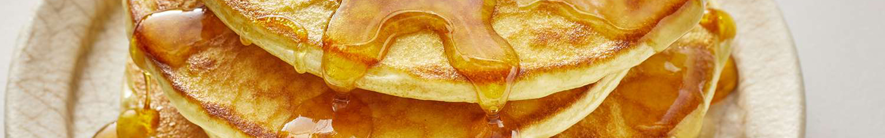

Gluten-free Pancake

- 1 cup gluten-free flour blend (ensure it contains xanthan gum, or add ½ tsp separately)
- 1 tablespoon sugar
- 1 teaspoon baking powder
- ½ teaspoon baking soda
- 1 cup milk (dairy or non-dairy)
- 2 large eggs
- 2 tablespoons melted butter or oil
- 1 teaspoon vanilla extract (optional)
- Mix the dry ingredients: In a medium bowl, whisk together the gluten-free flour, sugar, baking powder, baking soda, and salt.
- In another bowl, combine the milk, eggs, melted butter (or oil), and vanilla extract. Whisk until well combined.
- Pour the wet ingredients into the dry ingredients and gently mix until just combined. The batter should be slightly lumpy, but make sure there are no large pockets of dry flour.
- Heat a non-stick skillet or griddle over medium heat. Lightly grease it with butter or oil.
- Pour about ¼ cup of batter onto the skillet for each pancake. Cook for 2-3 minutes or until bubbles form on the surface, then flip and cook for another 2 minutes, until golden brown.
- Remove the pancakes from the skillet and serve with your favorite toppings, such as syrup, fresh fruit, or whipped cream.